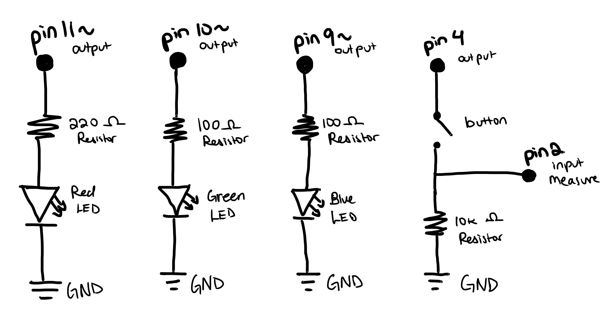
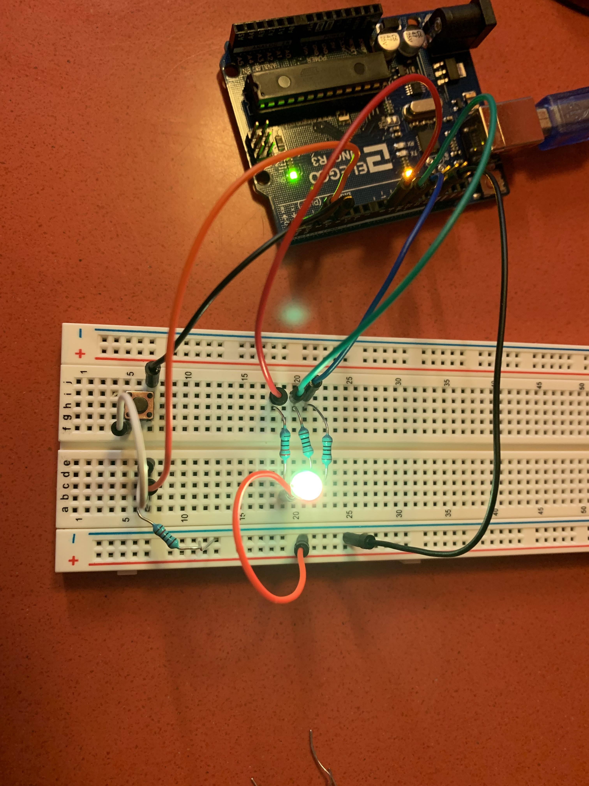

Anna's Assignment 2!
For this assignment, I had to make an RGB LED fade using our Arduino, and I needed to include a switch or button. Below is the documentation!
Schematic

Shown on the schematic are 3 pins on the Arduino with an LED and resistor attached to each of them, which are also connected to ground. These pins are outputs and are 11, 10, and 9. The three LEDs are a representation of the RGB LED. The red, blue, and green portions of the RGB LED are connected to pin 11, 10, and 9, respectively.
The fourth and fifth pin on the schematic, pin 4 and 2, are connected to a switch button and a resistor. Pin 4 is an output pin and pin 2 is an input pin. Pin 2 is measuring the state of this part of the circuit. This is further explained in the code snippet section.
The schematic also shows the values of the resistors, which I determined by using V=IR and using the resistors I had that matched closest. For the red portion of the RGB LED, as their voltage drop is 1.8V, the voltage that is being supplied is 5V, and the target current for LEDs is 20 mA, the resistor needed to reach that target current have to have a resistance of 160 ohms. As I only had 100 and 220 ohm resistors, I opted for 220 ohms as 100ohms would exceed the recommended current maximum of 30mA. Using V=IR, the current is then 14.5 mA. For the blue and green portions of the RGB LED, as their voltage drop is 3.2V, the resistance needed for 20 mA is 90 ohms. I opted to use an 100 ohm resistor for this one as I wanted the brightness of the LEDs to all be close to the same, and 220 ohms would have made the blue significantly dimmer. The calculated current in this case is 17mA. I used the 10k resistor pin 4 as was recommended in class and on the class discord. It is recommended because the switch only needs a minimal amount of current to function, and the 10k resistor minimizes the power used.
Code Snippet
void setup() {
// method that sets up the arduino, ran once.
pinMode(2, INPUT); //sets pin 2 to be an inputting pin
pinMode(4, OUTPUT); //sets pin 4 to be an outputting pin
pinMode(11, OUTPUT); //sets pin 11 to be an outputting pin
pinMode(10, OUTPUT); //sets pin 10 to be an outputting pin
pinMode(9, OUTPUT); //sets pin 9 to be an outputting pin
}
void loop() {
// method that runs main code continously repeating.
int R = 11; // initializes the variable "R" to represent pin 11
int G = 10; // initializes the variable "G" to represent pin 10
int B = 9; // initializes the variable "B" to represent pin 9
int red; // initializes the variable "red" to represent the value of red in RGB
int green; // initializes the variable "green" to represent the value of green in RGB
int blue; // initializes the variable "blue" to represent the value of blue in RGB
digitalWrite(4, HIGH); // turns the voltage level of pin 4 to high.
if (digitalRead(2) == LOW) { // measures in pin 2 is reading a high or low level of voltage. If it is low, it follows this first if statement.
for(int i = 0; i < 255;i++){ // repeats code 256 times, adding 1 to i variable each time
red -= 1; // subtracts 1 from the "red" variable
green += 1; // adds 1 to the "green" variable
analogWrite(R, red); // sets R value of RGB to the value of "red" variable
analogWrite(G, green); // sets G value of RGB to the value of "green" variable
delay(10); // wait for 10 miliseconds
}
red = 0; // sets "red" variable to 0
green = 255; // sets "green" variable to 255
blue = 0; // sets "blue" variable to 0
// confirms the values of each variable is where it should be for the next loop
for(int i = 0; i < 255;i++){ // repeats code 10 times, adding 1 to time variable each time
green -= 1; // subtracts 1 from the "red" variable
blue += 1;
analogWrite(G, green); // sets G value of RGB to the value of "green" variable
analogWrite(B, blue); // sets B value of RGB to the value of "blue" variable
delay(10); // wait for 10 miliseconds
}
red = 0; // sets "red" variable to 0
green = 0; // sets "green" variable to 0
blue = 255; // sets "blue" variable to 255
// confirms the values of each variable is where it should be for the next loop
for(int i = 0; i < 255;i++){ // repeats code 10 times, adding 1 to time variable each time
blue -= 1; // subtracts 1 from the "red" variable
red += 1;
analogWrite(B, blue); // sets B value of RGB to the value of "blue" variable
analogWrite(R, red); // sets R value of RGB to the value of "red" variable
delay(10); // wait for 10 miliseconds
}
} else { // measures in pin 2 is reading a high or low level of voltage. If it is high, it follows this else statement.
analogWrite(R, 255); // sets R value of RGB to 255
analogWrite(G, 0); // sets G value of RGB to 0
analogWrite(B, 0); // sets B value of RGB to 0
delay(500); // wait for 500 miliseconds
// sets color to red
analogWrite(R, 255); // sets R value of RGB to 255
analogWrite(G, 128); // sets G value of RGB to 128
analogWrite(B, 0); // sets B value of RGB to 0
delay(500); // wait for 500 miliseconds
// sets color to orange
analogWrite(R, 255); // sets R value of RGB to 255
analogWrite(G, 255); // sets G value of RGB to 255
analogWrite(B, 0); // sets B value of RGB to 0
delay(500); // wait for 500 miliseconds
// sets color to yellow
analogWrite(R, 0); // sets R value of RGB to 0
analogWrite(G, 255); // sets G value of RGB to 255
analogWrite(B, 0); // sets B value of RGB to 0
delay(500); // wait for 500 miliseconds
// sets color to green
analogWrite(R, 0); // sets R value of RGB to 0
analogWrite(G, 128); // sets G value of RGB to 128
analogWrite(B, 255); // sets B value of RGB to 255
delay(500); // wait for 500 miliseconds
// sets color to blue
analogWrite(R, 0); // sets R value of RGB to 0
analogWrite(G, 0); // sets G value of RGB to 0
analogWrite(B, 255); // sets B value of RGB to 255
delay(500); // wait for 500 miliseconds
// sets color to dark blue
analogWrite(R, 255); // sets R value of RGB to 255
analogWrite(G, 0); // sets G value of RGB to 0
analogWrite(B, 255); // sets B value of RGB to 255
delay(500); // wait for 500 miliseconds
// sets color to purple
analogWrite(R, 255); // sets R value of RGB to 255
analogWrite(G, 255); // sets G value of RGB to 255
analogWrite(B, 255); // sets B value of RGB to 255
delay(500); // wait for 500 miliseconds
// sets color to white
}
}
My code includes a setup method which runs once and prepares the pins on the Arduino for use by designating them as outputs, and a loop method which runs repeatedly and tells the pins to change voltage or change their RGB value, changing the colors on the RGB LED and activating the button.
The loop method first initializes the variables used to change the colors on the RGB LED. Then it runs a conditional statement based on the value that is read from pin 2 using digitalRead. This digitalRead will return whether pin 2 has high or low voltage, which indicates whether the button on the circuit is pressed or not. If the button is not pressed (default), it will enter the conditional statement and start the mode where the RGB fades smoothly between all of the different colors. It does this using three for loops, which cycle through the different values using two RGB colors. Note: I struggled to figure out how to use the values of RGB to make the all of the colors cycle. I initially tried to have all of the colors change at once, with an offset of 85 (~1/3 of 256), but that didn't work. I looked online for guidance so that I could make the colors shift in the way I wanted. This source helped me a lot when making this work.
Should the pin 2 read as high voltage, indicating a button press, the code will run the second part of the conditional statement instead and start the mode where the colors on the RGB LED will change rigidly and will not fade into eachother. This is done using analogWrite to define each color using the RGB values.
Circuit Image and Operation GIF



The first image shows the circuit from above. The second image (and first gif) shows the RGB LED fading between colors. The third image (and second gif) shows what happens when a user presses the button. The RGB LED switches between colors much more rigidly instead of with fading. The colors it switches between are: Red, orange, yellow, green, blue, dark blue, purple, and white.
In this circuit there are 6 wires connected to the arduino. One is connected each to ground, pin 11, pin 10, and pin 9. The one connected to ground is connected to the negative row of the breadboard. For pins 11, 10, and 9, the wire connects to a resistor, which is then connected to the RGB LED prong it corresponds to. The colors of the wires I used for each pin also correspond to the RGB prong it connects to.
Pin 4 is connected to a wirethat connects to the button, then a wire going to pin 2, then a resistor, then ground.